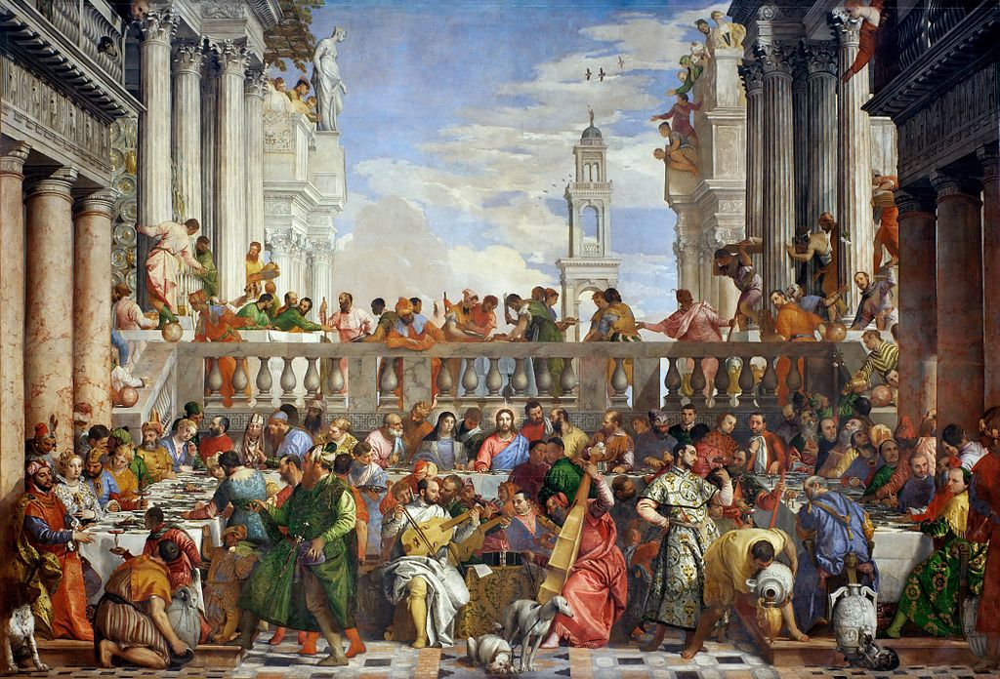

<head>
<meta charset="UTF-8" />
<meta name="keywords" content="drawing, painting" />
<meta name="description" content="drawings by Sunjy" />
<title>Sunjy</title>
<link rel="shortcut icon" type="image/x-icon" href="../../mImages/mCommon/favicon.ico" media="screen" />
<link rel="stylesheet" type="text/css" href="../../mCsses/mCommon/mCssA.css" />
<link rel="stylesheet" type="text/css" href="../../mCsses/mCommon/mCssB.css" />
<link rel="stylesheet" type="text/css" href="../../mCsses/mCommon/mCssC.css" />
<link rel="stylesheet" type="text/css" href="../../mCsses/mCommon/mCssD.css" />
<link rel="stylesheet" type="text/css" href="../../mCsses/mContent/mCssA.css" />
<link rel="stylesheet" type="text/css" href="../../mCsses/mContent/mCssB.css" />
<link rel="stylesheet" type="text/css" href="../../mCsses/mContent/mCssC.css" />
<link rel="stylesheet" type="text/css" href="../../mCsses/mContent/mCssD.css" />
</head>
<script type="text/javascript" src="../../mScripts/mContent/mContentAA.js" /></script>
<script type="text/javascript" src="../../mScripts/mContent/mContentAB.js" /></script>
<script type="text/javascript" src="../../mScripts/mContent/mContentAC.js" /></script>
<script type="text/javascript" src="../../mScripts/mContent/mContentAD.js" /></script>
<script type="text/javascript"></script> 
<script type="text/javascript">
document.write('<div class="mImgAbsolute"></div>');
/*
document.write('<p class="mFontSizeBColor" />From a white paper...</p>');
document.write('<table class="center"><tr><td>');
document.write('');
document.write('</td></tr></table>');
*/
</script>


<script type="text/javascript">
document.write('<p class="mFontSizeBColor" />The Wedding at Cana</p>');
document.write('<p class="mFontSizeSColor" />“The Wedding at Cana” by Paolo Veronese depicts the biblical story of the Marriage at Cana, at which Jesus converts water to wine. The size of this canvas makes “The Wedding Feast at Cana” the largest picture in the Musée du Louvre.<br><br>This oil painting is massive, measuring 6.77m × 9.94m. The picture is in the Mannerist style, which exaggerated the Renaissance ideals of figure, light, and color. The composition as an ideal representation of the subject, rather than as a realistic representation.<br><br>The visual tension and the many sub-plots in this painting by Veronese are achieved by the inclusion of sophisticated cultural codes and symbolism, which present a biblical story in relevant ways to a contemporary 1560s audience in Venice.<br><br>The Black Monks of the Order of Saint Benedict in Venice commissioned Paolo Veronese in 1562 to create the painting to decorate a wall of the monastery’s new refectory, at the Basilica of San Giorgio Maggiore.<br><br>A refectory is a dining room, especially in monasteries, and derives from the Latin “refectorium,” which means “a place one goes to be restored.”<br><br>The monastery dining-room allowed Veronese’s to create the perspective that allowed the viewers to see “The Wedding Feast at Cana” as a spatial extension of their dining room.<br><br>The Benedictine contract stipulated that the painter represent:<br><br>“The history of the banquet of Christ’s miracle at Cana, in Galilee, creating the number of figures that can be fully accommodated.”<br></p>');
document.write('<table class="center" /><tr><td>');
document.write('<br>This oil painting is massive, measuring 6.77m × 9.94m. The picture is in the Mannerist style, which exaggerated the Renaissance ideals of figure, light, and color. The composition as an ideal representation of the subject, rather than as a realistic representation.<br><br>The visual tension and the many sub-plots in this painting by Veronese are achieved by the inclusion of sophisticated cultural codes and symbolism, which present a biblical story in relevant ways to a contemporary 1560s audience in Venice.<br><br>The Black Monks of the Order of Saint Benedict in Venice commissioned Paolo Veronese in 1562 to create the painting to decorate a wall of the monastery’s new refectory, at the Basilica of San Giorgio Maggiore.<br><br>A refectory is a dining room, especially in monasteries, and derives from the Latin “refectorium,” which means “a place one goes to be restored.”<br><br>The monastery dining-room allowed Veronese’s to create the perspective that allowed the viewers to see “The Wedding Feast at Cana” as a spatial extension of their dining room.<br><br>The Benedictine contract stipulated that the painter represent:<br><br>“The history of the banquet of Christ’s miracle at Cana, in Galilee, creating the number of figures that can be fully accommodated.”<br>" />');
document.write('</td></tr></table>');
</script>


